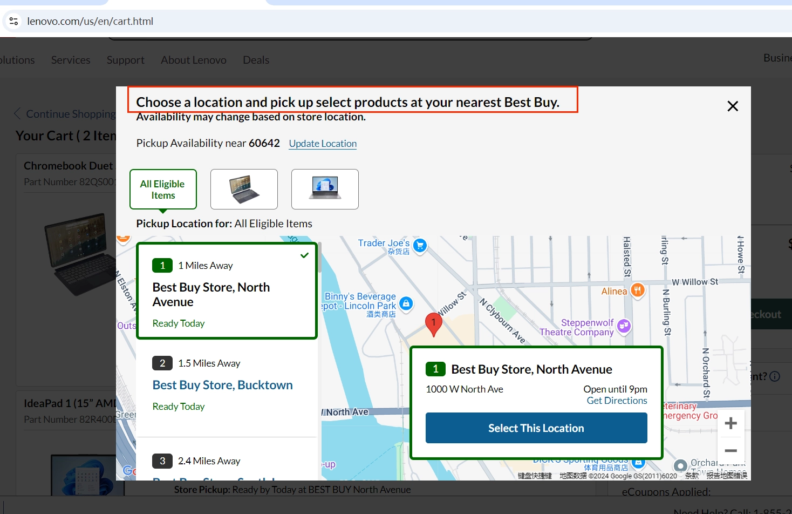
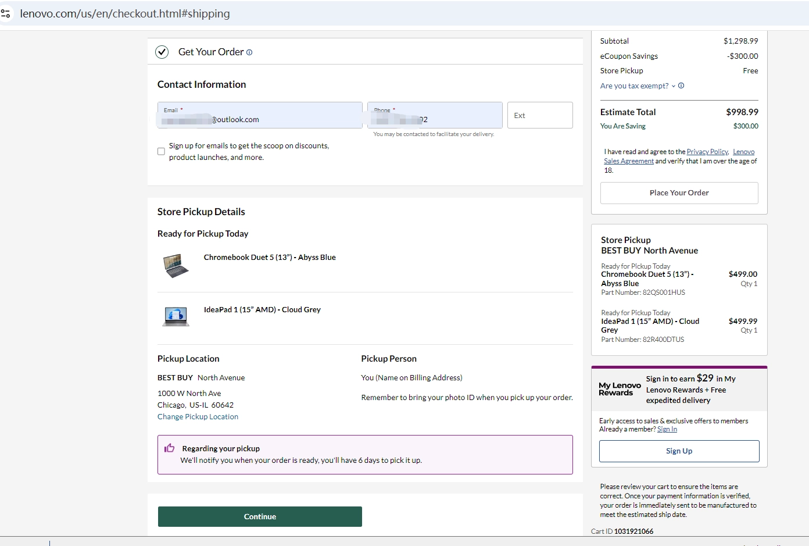
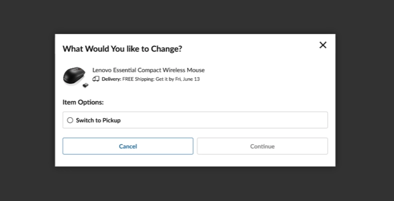
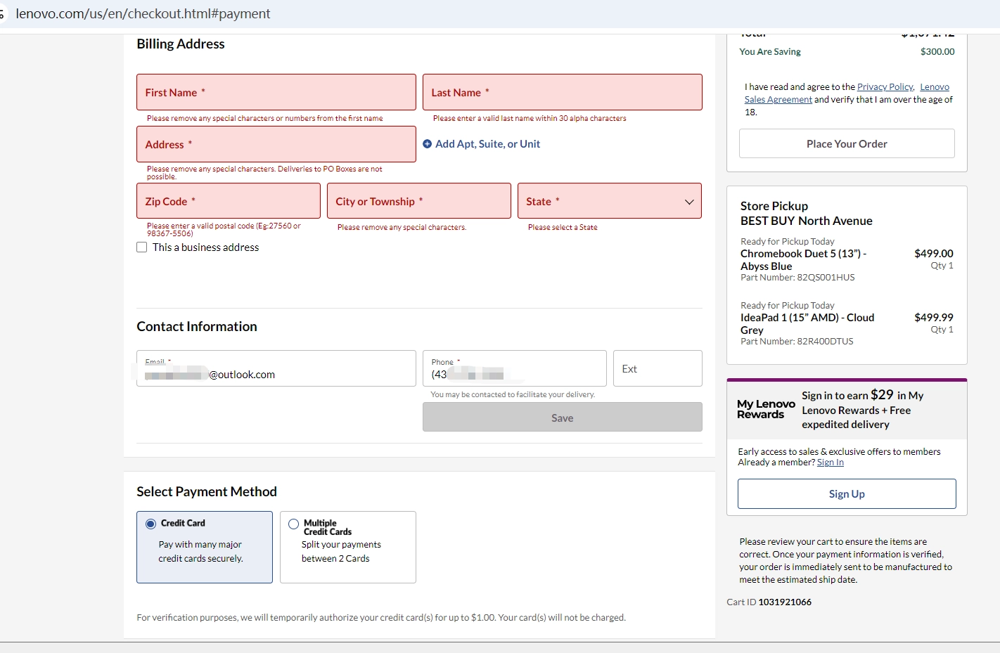
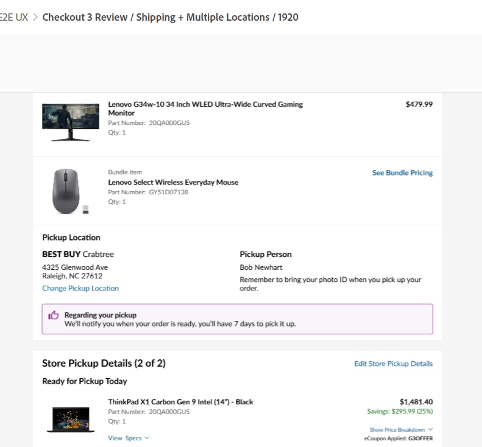
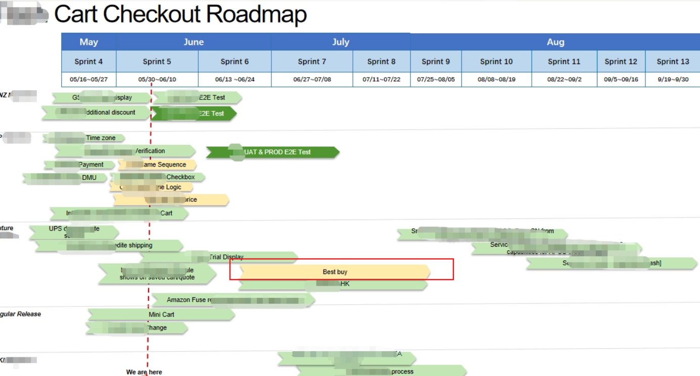
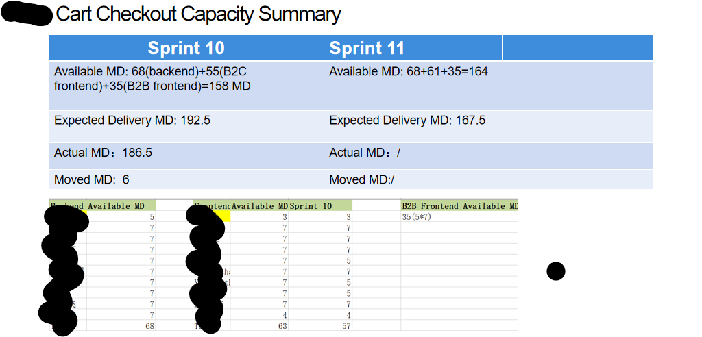
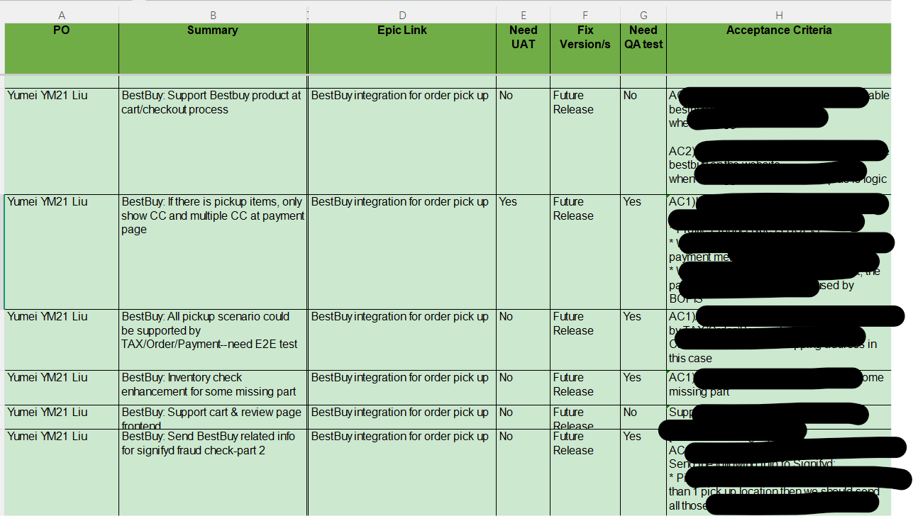

B2C BestBuy Instore Pickup Integration
checkout & cart experience







Context & Problem
Lenovo needed to let customers buy online at Lenovo.com but pick up in-store at a Best Buy location — a Buy Online, Pick Up In Store (BOPIS) partnership that required new cart and checkout logic layered onto the existing shopping flow.
Role & Scope
Senior Product Owner on a large, cross-functional initiative spanning product, UX, IT, and Best Buy's own technical team. I owned all requirements for the cart and checkout journey — the segment of the project covering delivery-method selection, mixed-cart logic, tax calculation, and order submission.
Requirements Ownership
Rather than user research, this project's requirements were driven by a business partnership agreement with Best Buy.
Strategy & Prioritization
For my scope, I balanced two fulfillment paths (ship vs. pickup) at the line-item level against an MVP payment constraint (credit card only at launch) and a phased rollout — sequencing which cart/checkout scenarios (all-pickup, all-shipping, mixed) shipped in MVP versus later gap stories, rather than blocking launch on every edge case.
Execution
Delivered the cart and checkout requirements, covering: real-time BBY inventory checks carried from product page into cart; line-item-level delivery-method switching; stock reservation at checkout with configurable release timing; location-based tax calculation split across pickup and shipping addresses; and the order-submission payload sent to Best Buy's API (SKU, quantity, fulfillment mode, pickup-person details, promise date).



Execution Planning
Outcomes
The initiative was projected at $20M in annual business value per the project's business case. The cart and checkout scope shipped to production for U.S. customers, with remaining gap stories tracked separately post-launch.